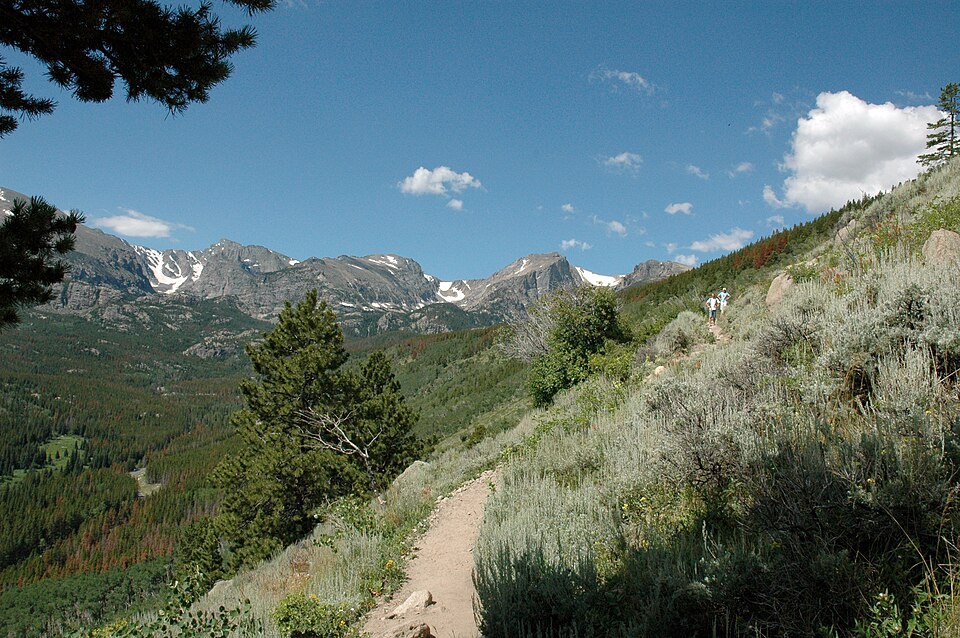
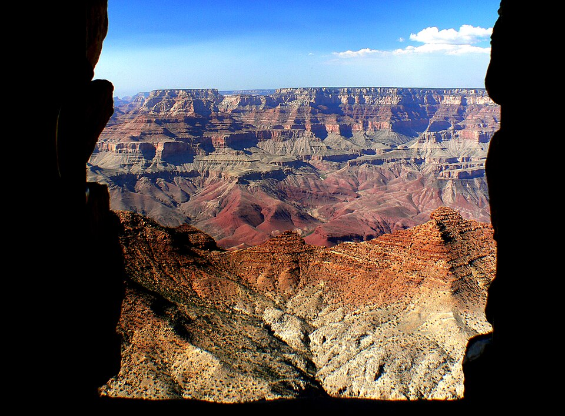
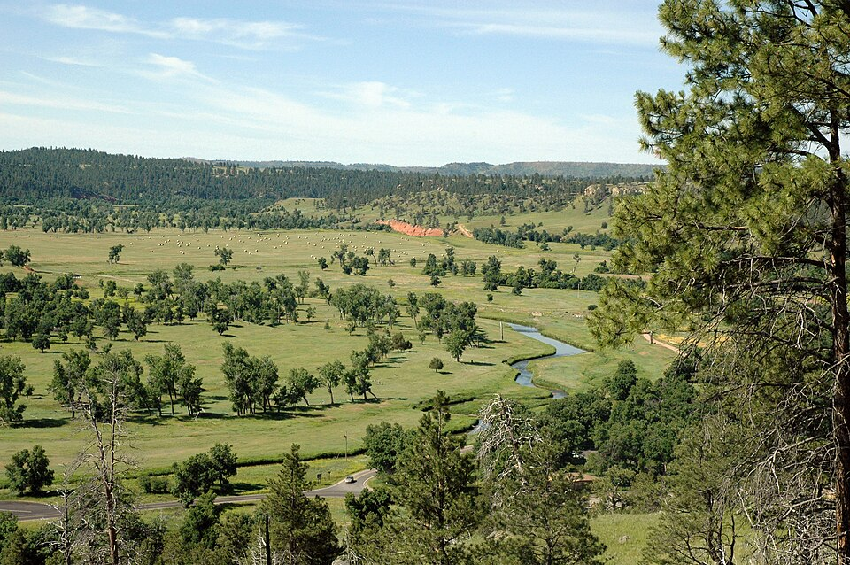

Switchback
Trails
Maps
Saved
Events
Within 25 miles
Trails near you
All trails
Easy
Moderate
Hard
Dog friendly

Moderate
4.7 mi loop
Bierstadt Lake Loop
Easy
2.9 mi out and back
Oberlibbach Forest Walk

Hard
6.2 mi out and back
Canyon Rim Overlook

Easy
3.8 mi point to point
Belle Fourche Valley